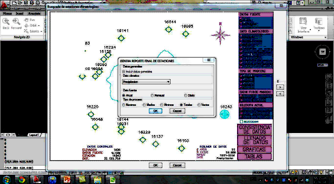
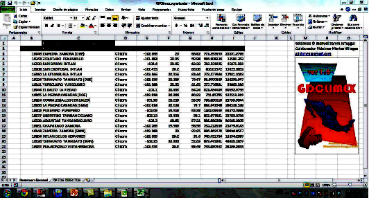

Para el reporte general seleccione la opcion "todas las estacione" y de clic,se desplegara el
siguiente menu

Seleccione las opciones y de clic en Ok,Se desplegara una hoja de excel, aqui active las el
contenido y se generara el reporte estructurado
